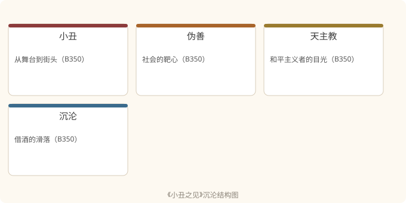

小丑之见
一、基本信息
| 作者 | 海因里希·伯尔 |
|---|---|
| 成书/出版 | 1963年（Britannica B350：The Clown (Ansichten eines Clowns, 1963)） Heinrich Boll — Encyclopaedia Britannica（百科全书） |
| 国别/地区 | 德国 |
| 时代 | 现当代 · 20世纪60年代初 |
| 体裁 | 长篇小说 |
| 语言 | 德语 |

《小丑之见》沉沦结构图（主题·结构图）
二、创作背景
Britannica（B350）：The Clown——主角'deteriorates through drinking from being a well-paid entertainer to a begging street musician'（借酒沉沦：从高薪滑稽演员到街头卖艺乞丐）。
Britannica（B350）：本作'critiques societal hypocrisy'（批判社会伪善）。
Britannica（B350）：伯尔——'the eras leading humanist interpreter of Germanys WWII experience'；罗马天主教和平主义者。
三、内容脉络
小丑汉斯的自述：一日之间从舞台到街头（B350：deteriorates through drinking；人物名与一日结构通说待核）。
天主教中产社会的伪善：婚姻、教义与金钱（B350：critiques societal hypocrisy）。
四、主要人物表
| 人物 | 身份 | 说明 |
|---|---|---|
| 汉斯·施尼尔 | 小丑 | （通说待核，B350未载） |
五、主题与艺术特点
- 社会伪善的批判（B350）。
- 沉沦与尊严（B350：deteriorates through drinking）。
- 天主教中产的婚姻伦理（通说待核）。
六、影响与评论
- Britannica：伯尔1972年诺奖——'the eras leading humanist interpreter of Germanys WWII experience'（B350）。
Heinrich Boll — Encyclopaedia Britannica（百科全书） - Britannica：'austere prose and sharp satire'（B350）。
Heinrich Boll — Encyclopaedia Britannica（百科全书）
七、阅读建议
难点
- 西德天主教社会背景。
- '一日结构'的自述形式（通说待核）。
- 《小丑之见》中译本（人民文学/上海译文等——通说待核）。
- 德文原版。
伯尔首选；后接《丧失名誉的卡塔琳娜·布鲁姆》。
八、待核实
- 汉斯·施尼尔等人名核对（B350未载）。
- '一日结构'说法待核。
- 1963年出版（Kiepenheuer & Witsch说）待核。
本页主要来源
海因里希·伯尔的其他收录作品：小丑之见丧失名誉的卡塔琳娜·布鲁姆女士及众生相